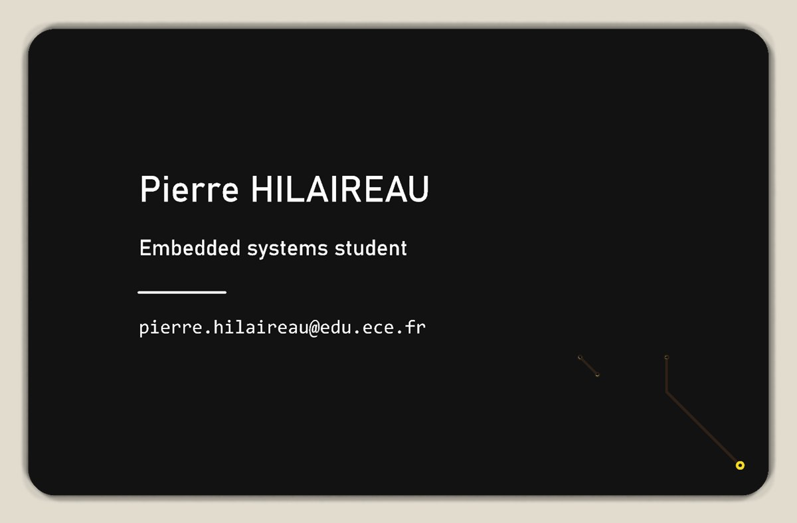
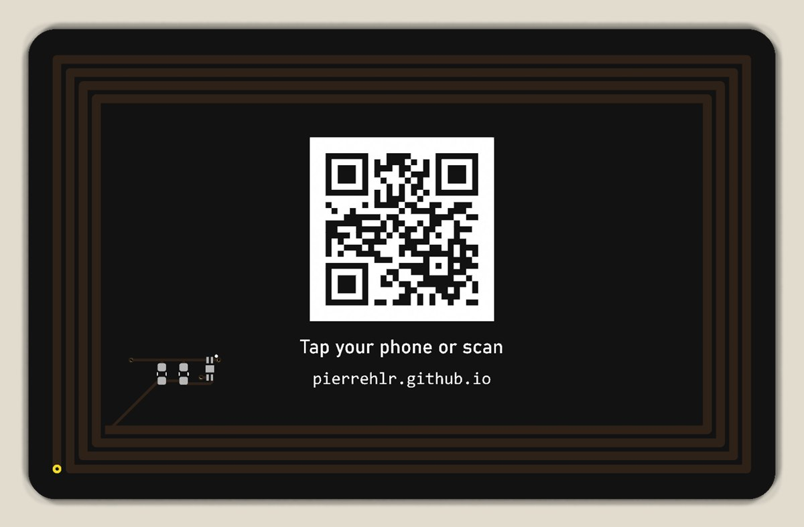

Cahier des charges
Le but : qu'une personne arrive sur mon portfolio en approchant simplement son téléphone de la carte. J'ai fixé les exigences avant de dessiner quoi que ce soit :
- fonctionnement 100 % passif : ni pile, ni alimentation, ni microcontrôleur ;
- lecture par les téléphones NFC courants (iPhone XS et plus récents, Android), sans application ;
- distance de lecture d'au moins 2 cm, 3 cm visés ;
- contenu protégé contre la réécriture ;
- un QR code de secours pour les téléphones sans NFC ;
- le format d'une carte bancaire, pour tenir dans un portefeuille.
Principe : un transformateur à 13,56 MHz
À 13,56 MHz, la longueur d'onde est de 22 m. Un téléphone posé à quelques centimètres est donc en plein champ proche : rien n'est vraiment « rayonné ». La bobine du téléphone et l'antenne de la carte se comportent comme le primaire et le secondaire d'un transformateur à air, faiblement couplés.
- Énergie : le champ du téléphone induit une tension dans l'antenne (loi de Faraday). La puce la redresse pour s'alimenter.
- Réponse : la puce fait varier sa propre charge. Le téléphone perçoit cette variation à travers l'inductance mutuelle, et la décode.
Au champ minimal prévu par la norme ISO/IEC 14443 (1,5 A/m), l'antenne de la carte ne fournit que 2,0 V efficaces à vide. C'est la résonance du circuit qui multiplie cette tension : tout le projet repose donc sur le dimensionnement de l'antenne.
Choix de la puce
Le premier candidat, la NXP NTAG213, n'est vendu qu'en wafer ou en module pour les fabricants de cartes : impossible à faire souder par un assembleur de PCB. Sa variante NTAG213F a la même mémoire (144 octets) et la même capacité d'entrée (50 pF), mais existe en boîtier soudable HXSON4 de 2,0 × 1,5 mm, disponible chez JLCPCB.
Le « F » ajoute une sortie de détection de champ (FD), prévue pour réveiller un microcontrôleur. Sans microcontrôleur, la datasheet impose deux précautions :
- FD ne doit pas rester en l'air : elle est reliée à la masse de la puce. En contrepartie,
le mode veille (
SLEEP_EN) ne doit jamais être activé à la programmation, sinon la carte deviendrait invisible ; - le pad central reste non connecté : il n'est soudé que pour la tenue mécanique.
Schéma
Le schéma tient en trois éléments : l'antenne, la puce, et deux emplacements de condensateurs d'accord laissés vides à la fabrication.
Dimensionnement de l'antenne
L'antenne et la capacité d'entrée de la puce forment un circuit LC parallèle. La tension reçue par la puce est maximale quand ce circuit résonne à la fréquence de la porteuse :
f0 = 1 / (2π·√(L·Ctot))
Ctot = Cpuce + Cparasite + CaccordJ'ai visé une résonance un peu au-dessus de 13,56 MHz, entre 14 et 15 MHz, pour deux raisons. Un condensateur d'accord ne peut qu'ajouter de la capacité, donc seulement faire descendre la fréquence : une antenne trop haute se corrige, une antenne trop basse oblige à refaire le PCB. Et le téléphone lui-même désaccorde la carte, différemment selon le modèle : le meilleur réglage se trouve par la mesure. Avec les 50 pF de la puce, cela demande une inductance de 2,1 à 2,6 µH.
L'antenne fait le tour de la carte (80 × 48 mm), comme celle d'une carte bancaire sans contact, que tous les téléphones savent lire. Aucune surface de cuivre à l'intérieur : elle serait parcourue par des courants de Foucault qui s'opposent au champ.
Deux calculs indépendants
Sans analyseur de réseau, impossible de mesurer l'inductance avant de commander. Pour pouvoir faire confiance au calcul, je l'ai mené par deux méthodes qui ne partagent aucune hypothèse, et je n'ai retenu une géométrie que si elles concordaient :
- Méthode de Greenhouse : la spirale est découpée en ses 16 segments droits. L'inductance totale est la somme des inductances propres de chaque segment et des inductances mutuelles de chaque paire de segments parallèles, obtenues en intégrant exactement la formule de Neumann. Le code a été validé sur une boucle carrée de 50 mm : 210,6 nH, contre 210,5 nH pour la formule analytique.
- Formule empirique des antennes imprimées, issue de la note d'application AN2972 de STMicroelectronics.
def _g(u, d):
return u * math.asinh(u / d) - math.sqrt(u * u + d * d)
def mutual_parallel(a1, b1, a2, b2, d):
"""Exact mutual inductance of two parallel filaments.
Filament 1 spans [a1, b1], filament 2 spans [a2, b2] along the same axis,
distance d apart. Obtained by integrating the Neumann formula.
"""
return MU0 / (4 * math.pi) * (
_g(b1 - a2, d) - _g(a1 - a2, d) - _g(b1 - b2, d) + _g(a1 - b2, d)
)calc/antenna.py (Python, sans bibliothèque externe).Les deux méthodes ont ensuite servi à choisir le nombre de spires et la largeur de piste :
| Spires | Piste | L Greenhouse | L empirique | Résonance sans accord |
|---|---|---|---|---|
| 3 | 1,0 mm | 1,44 µH | 1,34 µH | 18,3 MHz |
| 4 | 0,5 mm | 2,70 µH | 2,67 µH | 13,4 MHz |
| 4 | 0,8 mm | 2,40 µH | 2,35 µH | 14,2 MHz |
| 4 | 1,0 mm | 2,24 µH | 2,18 µH | 14,7 MHz |
| 5 | 1,0 mm | 3,11 µH | 3,15 µH | 12,5 MHz |
Avec 3 spires, la résonance est bien trop haute. Avec 5, ou avec des pistes de 0,5 mm, elle tombe déjà sous la porteuse, et aucun condensateur ne pourrait la remonter. 4 spires de 1,0 mm arrivent dans la fenêtre visée avec les pistes les plus larges, donc la résistance la plus faible. Les deux méthodes concordent à 2,5 % près : je retiens L = 2,24 µH.
La largeur de piste compte vraiment : à 13,56 MHz, l'effet de peau confine le courant sur environ 18 µm de profondeur, la moitié de l'épaisseur du cuivre. Une première version de l'empreinte avait des pistes de 0,2 mm : cinq fois plus de résistance (2,3 Ω en continu) et une résonance déjà à 14,0 MHz, sans presque plus de marge pour l'accord. Avec 1,0 mm, la résistance n'est plus que de 0,72 Ω à 13,56 MHz, pour un facteur de qualité à vide d'environ 265.
Accord sans analyseur de réseau
Avec L = 2,24 µH et 52,5 pF au total (50 pF pour la puce, environ 2,5 pF de capacités parasites entre les spires et sur les pastilles), la carte résonne à 14,7 MHz sans condensateur. Il faut environ 9 pF de plus pour descendre à 13,56 MHz.
Une erreur de 5 % sur L ou sur la capacité de la puce déplace la résonance à vide entre 14,3 et 15,1 MHz : dans tous les cas, la carte reste au-dessus de la porteuse et peut être accordée vers le bas.
Faute d'analyseur de réseau, la résonance elle-même ne se mesure pas. Ce qui compte pour l'utilisateur, en revanche, se mesure avec un téléphone et une règle : la distance de lecture maximale. La carte a donc deux emplacements 0603 en parallèle sur l'antenne, vides à la fabrication. Chacun des cinq prototypes recevra une valeur différente, et celle qui lit le plus loin, sur plusieurs téléphones, sera retenue :
| Prototype | C1 + C2 | Résonance calculée | Distance de lecture |
|---|---|---|---|
| 1 | 0 | 14,67 MHz | À mesurer |
| 2 | 3,3 pF | 14,23 MHz | À mesurer |
| 3 | 6,8 pF | 13,81 MHz | À mesurer |
| 4 | 8,2 pF | 13,65 MHz | À mesurer |
| 5 | 10 pF | 13,45 MHz | À mesurer |
Routage et fabrication
Pour KiCad, une bobine pose problème : en continu, c'est un court-circuit entre ses deux extrémités, donc une erreur au contrôle des règles de conception (DRC) si elle est tracée en pistes. L'antenne est donc une empreinte à part, dessinée avec 16 lignes de cuivre et déclarée comme net tie : KiCad sait alors que ce court-circuit est voulu.
- l'extrémité extérieure de la spirale revient vers l'intérieur par un pont sur la face arrière, sous les quatre spires ;
- la puce est tournée de 180° et les condensateurs de 90° : toutes les bornes LB se retrouvent en haut, toutes les bornes LA en bas, et le routage se réduit à deux rails parallèles ;
- ni plan de masse ni surface de cuivre : rien ne doit gêner le champ à l'intérieur de la boucle.


Les cartes sont fabriquées et assemblées par JLCPCB : FR-4 de 0,8 mm, vernis noir, sérigraphie blanche et finition ENIG (dorée), qui donne aussi des pastilles bien planes pour les broches de 0,25 mm de la puce. Seule la puce est posée par l'assembleur ; les condensateurs d'accord seront soudés à la main.
Données et QR code
Le téléphone ouvre le lien grâce à un enregistrement NDEF de type URI. Le préfixe
https:// n'y est pas stocké en texte mais codé sur un seul octet :
le message complet tient en 28 octets, soit 19 % des 144 octets de la puce.
Le QR code de secours contient la même adresse, écrite en majuscules
(HTTPS://PIERREHLR.GITHUB.IO/). Le protocole et le nom de domaine ne sont pas
sensibles à la casse, et les majuscules permettent le mode alphanumérique : 11 bits pour
deux caractères au lieu de 16. Le code tient alors en 25 × 25 modules au lieu de 29 × 29 ;
sur 17,5 mm de côté, chaque module mesure 0,70 mm, bien au-dessus de la résolution
de la sérigraphie. Il est imprimé en négatif (la sérigraphie blanche forme le fond, le vernis noir
les modules) : sinon, le code apparaîtrait inversé et beaucoup de lecteurs le refuseraient.
Suite du projet
Les cinq cartes assemblées sont commandées. Les prochaines étapes :
- mesurer la distance de lecture sans accord, avec plusieurs téléphones (iPhone et Android) ;
- essayer les valeurs de condensateur sur les cinq prototypes, et garder celle qui donne la meilleure distance dans le pire cas ;
- écrire l'URL avec NXP TagWriter, vérifier le message avec NXP TagInfo, puis verrouiller la puce en écriture.
Les distances mesurées compléteront le tableau d'accord ci-dessus.